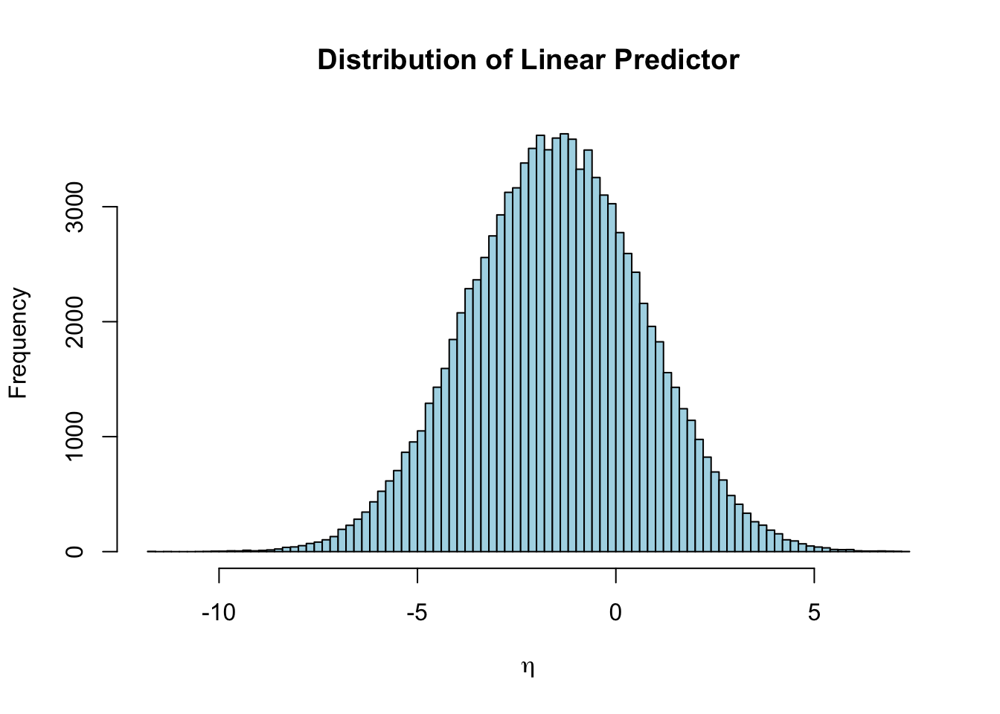
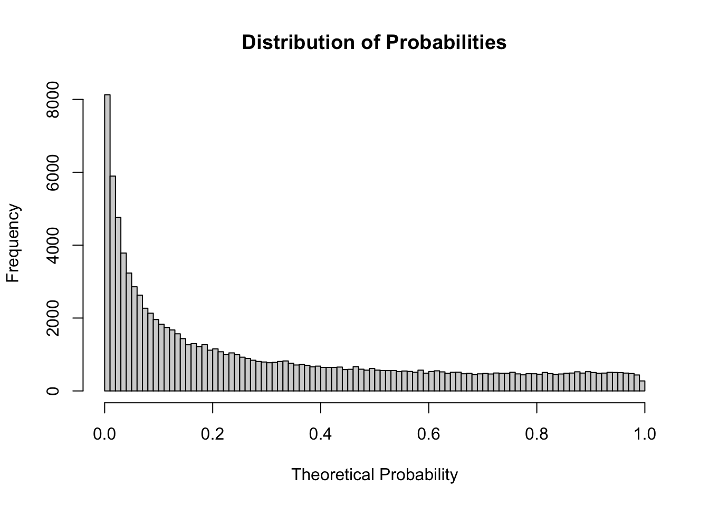
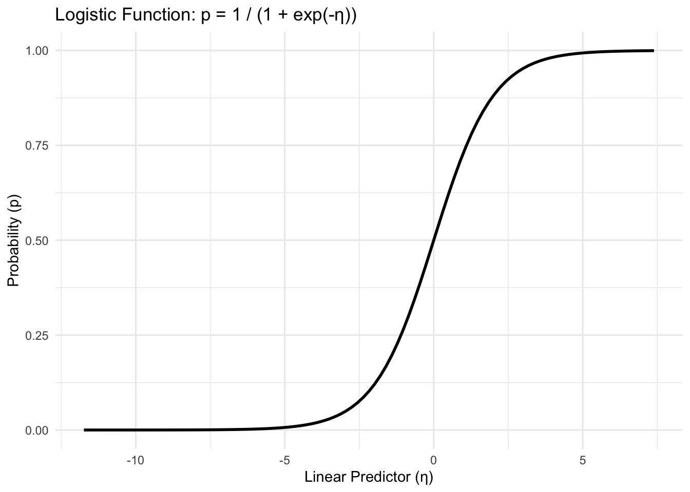
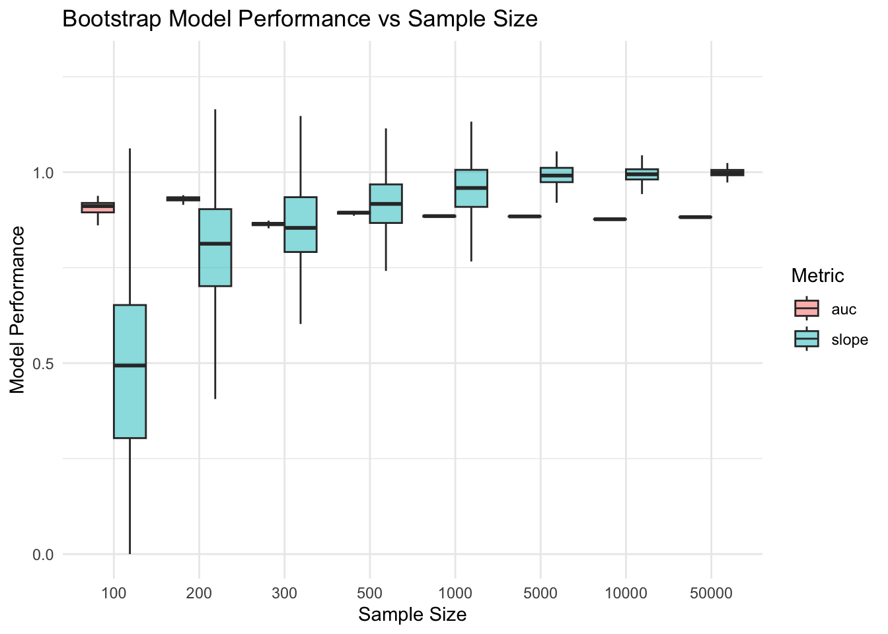

library(rms)
library(tidyverse)
library(pROC)
library(ggplot2)Bootstrapping & Sample Sizes
Load required libraries:
On the previous page, we ran through some manual bootstrapping for the purposes of showing their in-principle operation. There we used just a single predictor and a relatively small sample size.
Now let’s try to develop a bigger bootstrap validation procedure with a bigger sample size and more covariates. Again, start by generating some sample data, this time with \(\beta_0=-1.5\) and predictor effects \(\beta_k = 0.7\) for \(1 \leq k \leq 10\).
set.seed(11235)
k <- 10
n <- 100000
beta_0 <- -1.5
beta <- rep(0.7, k)
simulate_data <- function(k, n) {
X <- matrix(rnorm(n*k), nrow = n, ncol = k)
colnames(X) <- paste0("x", 1:k)
eta <- beta_0 + X%*%beta
p <- 1 / (1 + exp(-eta))
y <- rbinom(n, size = 1, prob = p)
return(
list(
df = data.frame(X, y = y),
eta = eta,
p = p
)
)
}
dgp_data <- simulate_data(k, n)
df <- dgp_data$df
print(paste0("Hence a prevalence of ", round(100 * mean(df$y), 2), "%"))[1] "Hence a prevalence of 29.39%"glm(y ~ ., data = df, family = "binomial")
Call: glm(formula = y ~ ., family = "binomial", data = df)
Coefficients:
(Intercept) x1 x2 x3 x4 x5
-1.5203 0.6942 0.6887 0.6969 0.7059 0.7101
x6 x7 x8 x9 x10
0.7114 0.7021 0.6996 0.7037 0.7062
Degrees of Freedom: 99999 Total (i.e. Null); 99989 Residual
Null Deviance: 121100
Residual Deviance: 76390 AIC: 76420Visualise:
hist(dgp_data$eta, breaks = 100, col = "lightblue", main = "Distribution of Linear Predictor",
xlab = expression(eta))#, freq = FALSE)
hist(dgp_data$p, breaks = 100, main = "Distribution of Probabilities",
xlab = "Theoretical Probability")#, freq = FALSE)
plot_data <- cbind(dgp_data$df, eta = dgp_data$eta, p = dgp_data$p)
ggplot(plot_data, aes(x = eta, y = p)) +
geom_line(stat = "function", fun = plogis, linewidth = 1) +
labs(x = "Linear Predictor (η)", y = "Probability (p)", title = "Logistic Function: p = 1 / (1 + exp(-η))") +
theme_minimal()
Create dataframe and model
dd <- datadist(df)
options(datadist = "dd")
fit <- lrm(y ~ ., data = df, x=TRUE,y=TRUE)
print(fit)Logistic Regression Model
lrm(formula = y ~ ., data = df, x = TRUE, y = TRUE)
Model Likelihood Discrimination Rank Discrim.
Ratio Test Indexes Indexes
Obs 1e+05 LR chi2 44717.76 R2 0.514 C 0.882
0 70615 d.f. 10 R2(10,1e+05)0.361 Dxy 0.764
1 29385 Pr(> chi2) <0.0001 R2(10,62250.7)0.512 gamma 0.764
max |deriv| 0.001 Brier 0.122 tau-a 0.317
Coef S.E. Wald Z Pr(>|Z|)
Intercept -1.5203 0.0112 -136.06 <0.0001
x1 0.6942 0.0098 70.90 <0.0001
x2 0.6887 0.0097 70.80 <0.0001
x3 0.6969 0.0098 71.19 <0.0001
x4 0.7059 0.0099 71.56 <0.0001
x5 0.7101 0.0098 72.47 <0.0001
x6 0.7114 0.0098 72.46 <0.0001
x7 0.7021 0.0099 71.25 <0.0001
x8 0.6996 0.0097 71.78 <0.0001
x9 0.7037 0.0098 71.69 <0.0001
x10 0.7062 0.0098 72.11 <0.0001 Odd ratios:
exp(fit$coefficients)Intercept x1 x2 x3 x4 x5 x6 x7
0.2186371 2.0021575 1.9911487 2.0075936 2.0255935 2.0342269 2.0367993 2.0179830
x8 x9 x10
2.0129725 2.0213141 2.0263181 Initial Model Validation
val <- validate(fit, method = "boot", B = 200)
val index.orig training test optimism index.corrected n
Dxy 0.7641 0.7640 0.7640 0e+00 0.7641 200
R2 0.5135 0.5135 0.5134 0e+00 0.5135 200
Intercept 0.0000 0.0000 -0.0002 2e-04 -0.0002 200
Slope 1.0000 1.0000 0.9999 1e-04 0.9999 200
Emax 0.0000 0.0000 0.0001 1e-04 0.0001 200
D 0.4472 0.4471 0.4471 0e+00 0.4471 200
U 0.0000 0.0000 0.0000 0e+00 0.0000 200
Q 0.4472 0.4471 0.4471 1e-04 0.4471 200
B 0.1222 0.1222 0.1222 0e+00 0.1222 200
g 2.5022 2.5022 2.5017 5e-04 2.5018 200
gp 0.3172 0.3172 0.3172 0e+00 0.3173 200auc <- (val["Dxy", "index.corrected"] + 1) / 2
print(auc)[1] 0.8820359Sample Size
I would like to understand the effect of sample size on model performance. Here I focus on two methods of model validation – Cross Validation (10-fold) and Bootstrapping – and applying them to the model formulation given above on variable sample sizes.
Let’s start by setting up the basics:
df <- dgp_data$df
sample_sizes <- c(100, 200, 300, 500, 1000, 5000, 10000, 50000)
B <- 200
performance_metrics <- c('AUC', 'calibration_slope')So we have a vector of sample sizes, a number of bootstrap repetitions, and we would like to use 2 performance metrics (AUC, Calibration slope) for understand the impact of sample size on model performance.
Hence we need to calculate 5 * 200 * 2 = 2000 data points, stored in a 4D data structure.
Next let’s set up a nested-list data structure to hold the results.
rm(results) # if neededWarning in rm(results): object 'results' not foundresults <- list()
for (s in sample_sizes) {
results[[as.character(s)]] <- list(auc = numeric(B), slope = numeric(B))
}
fail_counts <- setNames(rep(0, length(sample_sizes)), sample_sizes)Each of these datapoints will be populated with either an AUC value or a calibration slope. Let’s start with a simple function that will allow us to calculate a single result-pair. Later we will wrap this inside a double-loop to populate the results list fully.
sample300 <- sample_n(df, 300, replace = FALSE) #for testing
performance <- function(dev_data) {
bootstrap_data <- sample_n(dev_data, nrow(dev_data), replace = TRUE)
mod <- suppressWarnings(glm(y ~ ., family = "binomial", data = bootstrap_data))
if (inherits(mod, "try-error") || !mod$converged) return(NULL)
pred_dev_reponse <- predict(mod, newdata = dev_data, type = "response")
auc <- as.numeric(roc(dev_data$y, pred_dev_reponse, quiet = TRUE)$auc)
# calibration slope
pred_dev_link <- predict(mod, newdata = dev_data, type = "link")
calibration_model <- suppressWarnings(glm(dev_data$y ~ pred_dev_link, family = "binomial"))
slope <- as.numeric(coef(calibration_model))[2]
return(
list(
auc = auc,
slope = slope
)
)
}
res <- performance(sample300)
res$auc
[1] 0.8817003
$slope
[1] 0.9121992Next, let’s check that we can successfully populate our results list with just these two values in the 300 sample-size block.
results[["300"]][["auc"]][[1]] <- res$auc
results[["300"]][["slope"]][[1]] <- res$slope
results$`100`
$`100`$auc
[1] 0 0 0 0 0 0 0 0 0 0 0 0 0 0 0 0 0 0 0 0 0 0 0 0 0 0 0 0 0 0 0 0 0 0 0 0 0
[38] 0 0 0 0 0 0 0 0 0 0 0 0 0 0 0 0 0 0 0 0 0 0 0 0 0 0 0 0 0 0 0 0 0 0 0 0 0
[75] 0 0 0 0 0 0 0 0 0 0 0 0 0 0 0 0 0 0 0 0 0 0 0 0 0 0 0 0 0 0 0 0 0 0 0 0 0
[112] 0 0 0 0 0 0 0 0 0 0 0 0 0 0 0 0 0 0 0 0 0 0 0 0 0 0 0 0 0 0 0 0 0 0 0 0 0
[149] 0 0 0 0 0 0 0 0 0 0 0 0 0 0 0 0 0 0 0 0 0 0 0 0 0 0 0 0 0 0 0 0 0 0 0 0 0
[186] 0 0 0 0 0 0 0 0 0 0 0 0 0 0 0
$`100`$slope
[1] 0 0 0 0 0 0 0 0 0 0 0 0 0 0 0 0 0 0 0 0 0 0 0 0 0 0 0 0 0 0 0 0 0 0 0 0 0
[38] 0 0 0 0 0 0 0 0 0 0 0 0 0 0 0 0 0 0 0 0 0 0 0 0 0 0 0 0 0 0 0 0 0 0 0 0 0
[75] 0 0 0 0 0 0 0 0 0 0 0 0 0 0 0 0 0 0 0 0 0 0 0 0 0 0 0 0 0 0 0 0 0 0 0 0 0
[112] 0 0 0 0 0 0 0 0 0 0 0 0 0 0 0 0 0 0 0 0 0 0 0 0 0 0 0 0 0 0 0 0 0 0 0 0 0
[149] 0 0 0 0 0 0 0 0 0 0 0 0 0 0 0 0 0 0 0 0 0 0 0 0 0 0 0 0 0 0 0 0 0 0 0 0 0
[186] 0 0 0 0 0 0 0 0 0 0 0 0 0 0 0
$`200`
$`200`$auc
[1] 0 0 0 0 0 0 0 0 0 0 0 0 0 0 0 0 0 0 0 0 0 0 0 0 0 0 0 0 0 0 0 0 0 0 0 0 0
[38] 0 0 0 0 0 0 0 0 0 0 0 0 0 0 0 0 0 0 0 0 0 0 0 0 0 0 0 0 0 0 0 0 0 0 0 0 0
[75] 0 0 0 0 0 0 0 0 0 0 0 0 0 0 0 0 0 0 0 0 0 0 0 0 0 0 0 0 0 0 0 0 0 0 0 0 0
[112] 0 0 0 0 0 0 0 0 0 0 0 0 0 0 0 0 0 0 0 0 0 0 0 0 0 0 0 0 0 0 0 0 0 0 0 0 0
[149] 0 0 0 0 0 0 0 0 0 0 0 0 0 0 0 0 0 0 0 0 0 0 0 0 0 0 0 0 0 0 0 0 0 0 0 0 0
[186] 0 0 0 0 0 0 0 0 0 0 0 0 0 0 0
$`200`$slope
[1] 0 0 0 0 0 0 0 0 0 0 0 0 0 0 0 0 0 0 0 0 0 0 0 0 0 0 0 0 0 0 0 0 0 0 0 0 0
[38] 0 0 0 0 0 0 0 0 0 0 0 0 0 0 0 0 0 0 0 0 0 0 0 0 0 0 0 0 0 0 0 0 0 0 0 0 0
[75] 0 0 0 0 0 0 0 0 0 0 0 0 0 0 0 0 0 0 0 0 0 0 0 0 0 0 0 0 0 0 0 0 0 0 0 0 0
[112] 0 0 0 0 0 0 0 0 0 0 0 0 0 0 0 0 0 0 0 0 0 0 0 0 0 0 0 0 0 0 0 0 0 0 0 0 0
[149] 0 0 0 0 0 0 0 0 0 0 0 0 0 0 0 0 0 0 0 0 0 0 0 0 0 0 0 0 0 0 0 0 0 0 0 0 0
[186] 0 0 0 0 0 0 0 0 0 0 0 0 0 0 0
$`300`
$`300`$auc
[1] 0.8817003 0.0000000 0.0000000 0.0000000 0.0000000 0.0000000 0.0000000
[8] 0.0000000 0.0000000 0.0000000 0.0000000 0.0000000 0.0000000 0.0000000
[15] 0.0000000 0.0000000 0.0000000 0.0000000 0.0000000 0.0000000 0.0000000
[22] 0.0000000 0.0000000 0.0000000 0.0000000 0.0000000 0.0000000 0.0000000
[29] 0.0000000 0.0000000 0.0000000 0.0000000 0.0000000 0.0000000 0.0000000
[36] 0.0000000 0.0000000 0.0000000 0.0000000 0.0000000 0.0000000 0.0000000
[43] 0.0000000 0.0000000 0.0000000 0.0000000 0.0000000 0.0000000 0.0000000
[50] 0.0000000 0.0000000 0.0000000 0.0000000 0.0000000 0.0000000 0.0000000
[57] 0.0000000 0.0000000 0.0000000 0.0000000 0.0000000 0.0000000 0.0000000
[64] 0.0000000 0.0000000 0.0000000 0.0000000 0.0000000 0.0000000 0.0000000
[71] 0.0000000 0.0000000 0.0000000 0.0000000 0.0000000 0.0000000 0.0000000
[78] 0.0000000 0.0000000 0.0000000 0.0000000 0.0000000 0.0000000 0.0000000
[85] 0.0000000 0.0000000 0.0000000 0.0000000 0.0000000 0.0000000 0.0000000
[92] 0.0000000 0.0000000 0.0000000 0.0000000 0.0000000 0.0000000 0.0000000
[99] 0.0000000 0.0000000 0.0000000 0.0000000 0.0000000 0.0000000 0.0000000
[106] 0.0000000 0.0000000 0.0000000 0.0000000 0.0000000 0.0000000 0.0000000
[113] 0.0000000 0.0000000 0.0000000 0.0000000 0.0000000 0.0000000 0.0000000
[120] 0.0000000 0.0000000 0.0000000 0.0000000 0.0000000 0.0000000 0.0000000
[127] 0.0000000 0.0000000 0.0000000 0.0000000 0.0000000 0.0000000 0.0000000
[134] 0.0000000 0.0000000 0.0000000 0.0000000 0.0000000 0.0000000 0.0000000
[141] 0.0000000 0.0000000 0.0000000 0.0000000 0.0000000 0.0000000 0.0000000
[148] 0.0000000 0.0000000 0.0000000 0.0000000 0.0000000 0.0000000 0.0000000
[155] 0.0000000 0.0000000 0.0000000 0.0000000 0.0000000 0.0000000 0.0000000
[162] 0.0000000 0.0000000 0.0000000 0.0000000 0.0000000 0.0000000 0.0000000
[169] 0.0000000 0.0000000 0.0000000 0.0000000 0.0000000 0.0000000 0.0000000
[176] 0.0000000 0.0000000 0.0000000 0.0000000 0.0000000 0.0000000 0.0000000
[183] 0.0000000 0.0000000 0.0000000 0.0000000 0.0000000 0.0000000 0.0000000
[190] 0.0000000 0.0000000 0.0000000 0.0000000 0.0000000 0.0000000 0.0000000
[197] 0.0000000 0.0000000 0.0000000 0.0000000
$`300`$slope
[1] 0.9121992 0.0000000 0.0000000 0.0000000 0.0000000 0.0000000 0.0000000
[8] 0.0000000 0.0000000 0.0000000 0.0000000 0.0000000 0.0000000 0.0000000
[15] 0.0000000 0.0000000 0.0000000 0.0000000 0.0000000 0.0000000 0.0000000
[22] 0.0000000 0.0000000 0.0000000 0.0000000 0.0000000 0.0000000 0.0000000
[29] 0.0000000 0.0000000 0.0000000 0.0000000 0.0000000 0.0000000 0.0000000
[36] 0.0000000 0.0000000 0.0000000 0.0000000 0.0000000 0.0000000 0.0000000
[43] 0.0000000 0.0000000 0.0000000 0.0000000 0.0000000 0.0000000 0.0000000
[50] 0.0000000 0.0000000 0.0000000 0.0000000 0.0000000 0.0000000 0.0000000
[57] 0.0000000 0.0000000 0.0000000 0.0000000 0.0000000 0.0000000 0.0000000
[64] 0.0000000 0.0000000 0.0000000 0.0000000 0.0000000 0.0000000 0.0000000
[71] 0.0000000 0.0000000 0.0000000 0.0000000 0.0000000 0.0000000 0.0000000
[78] 0.0000000 0.0000000 0.0000000 0.0000000 0.0000000 0.0000000 0.0000000
[85] 0.0000000 0.0000000 0.0000000 0.0000000 0.0000000 0.0000000 0.0000000
[92] 0.0000000 0.0000000 0.0000000 0.0000000 0.0000000 0.0000000 0.0000000
[99] 0.0000000 0.0000000 0.0000000 0.0000000 0.0000000 0.0000000 0.0000000
[106] 0.0000000 0.0000000 0.0000000 0.0000000 0.0000000 0.0000000 0.0000000
[113] 0.0000000 0.0000000 0.0000000 0.0000000 0.0000000 0.0000000 0.0000000
[120] 0.0000000 0.0000000 0.0000000 0.0000000 0.0000000 0.0000000 0.0000000
[127] 0.0000000 0.0000000 0.0000000 0.0000000 0.0000000 0.0000000 0.0000000
[134] 0.0000000 0.0000000 0.0000000 0.0000000 0.0000000 0.0000000 0.0000000
[141] 0.0000000 0.0000000 0.0000000 0.0000000 0.0000000 0.0000000 0.0000000
[148] 0.0000000 0.0000000 0.0000000 0.0000000 0.0000000 0.0000000 0.0000000
[155] 0.0000000 0.0000000 0.0000000 0.0000000 0.0000000 0.0000000 0.0000000
[162] 0.0000000 0.0000000 0.0000000 0.0000000 0.0000000 0.0000000 0.0000000
[169] 0.0000000 0.0000000 0.0000000 0.0000000 0.0000000 0.0000000 0.0000000
[176] 0.0000000 0.0000000 0.0000000 0.0000000 0.0000000 0.0000000 0.0000000
[183] 0.0000000 0.0000000 0.0000000 0.0000000 0.0000000 0.0000000 0.0000000
[190] 0.0000000 0.0000000 0.0000000 0.0000000 0.0000000 0.0000000 0.0000000
[197] 0.0000000 0.0000000 0.0000000 0.0000000
$`500`
$`500`$auc
[1] 0 0 0 0 0 0 0 0 0 0 0 0 0 0 0 0 0 0 0 0 0 0 0 0 0 0 0 0 0 0 0 0 0 0 0 0 0
[38] 0 0 0 0 0 0 0 0 0 0 0 0 0 0 0 0 0 0 0 0 0 0 0 0 0 0 0 0 0 0 0 0 0 0 0 0 0
[75] 0 0 0 0 0 0 0 0 0 0 0 0 0 0 0 0 0 0 0 0 0 0 0 0 0 0 0 0 0 0 0 0 0 0 0 0 0
[112] 0 0 0 0 0 0 0 0 0 0 0 0 0 0 0 0 0 0 0 0 0 0 0 0 0 0 0 0 0 0 0 0 0 0 0 0 0
[149] 0 0 0 0 0 0 0 0 0 0 0 0 0 0 0 0 0 0 0 0 0 0 0 0 0 0 0 0 0 0 0 0 0 0 0 0 0
[186] 0 0 0 0 0 0 0 0 0 0 0 0 0 0 0
$`500`$slope
[1] 0 0 0 0 0 0 0 0 0 0 0 0 0 0 0 0 0 0 0 0 0 0 0 0 0 0 0 0 0 0 0 0 0 0 0 0 0
[38] 0 0 0 0 0 0 0 0 0 0 0 0 0 0 0 0 0 0 0 0 0 0 0 0 0 0 0 0 0 0 0 0 0 0 0 0 0
[75] 0 0 0 0 0 0 0 0 0 0 0 0 0 0 0 0 0 0 0 0 0 0 0 0 0 0 0 0 0 0 0 0 0 0 0 0 0
[112] 0 0 0 0 0 0 0 0 0 0 0 0 0 0 0 0 0 0 0 0 0 0 0 0 0 0 0 0 0 0 0 0 0 0 0 0 0
[149] 0 0 0 0 0 0 0 0 0 0 0 0 0 0 0 0 0 0 0 0 0 0 0 0 0 0 0 0 0 0 0 0 0 0 0 0 0
[186] 0 0 0 0 0 0 0 0 0 0 0 0 0 0 0
$`1000`
$`1000`$auc
[1] 0 0 0 0 0 0 0 0 0 0 0 0 0 0 0 0 0 0 0 0 0 0 0 0 0 0 0 0 0 0 0 0 0 0 0 0 0
[38] 0 0 0 0 0 0 0 0 0 0 0 0 0 0 0 0 0 0 0 0 0 0 0 0 0 0 0 0 0 0 0 0 0 0 0 0 0
[75] 0 0 0 0 0 0 0 0 0 0 0 0 0 0 0 0 0 0 0 0 0 0 0 0 0 0 0 0 0 0 0 0 0 0 0 0 0
[112] 0 0 0 0 0 0 0 0 0 0 0 0 0 0 0 0 0 0 0 0 0 0 0 0 0 0 0 0 0 0 0 0 0 0 0 0 0
[149] 0 0 0 0 0 0 0 0 0 0 0 0 0 0 0 0 0 0 0 0 0 0 0 0 0 0 0 0 0 0 0 0 0 0 0 0 0
[186] 0 0 0 0 0 0 0 0 0 0 0 0 0 0 0
$`1000`$slope
[1] 0 0 0 0 0 0 0 0 0 0 0 0 0 0 0 0 0 0 0 0 0 0 0 0 0 0 0 0 0 0 0 0 0 0 0 0 0
[38] 0 0 0 0 0 0 0 0 0 0 0 0 0 0 0 0 0 0 0 0 0 0 0 0 0 0 0 0 0 0 0 0 0 0 0 0 0
[75] 0 0 0 0 0 0 0 0 0 0 0 0 0 0 0 0 0 0 0 0 0 0 0 0 0 0 0 0 0 0 0 0 0 0 0 0 0
[112] 0 0 0 0 0 0 0 0 0 0 0 0 0 0 0 0 0 0 0 0 0 0 0 0 0 0 0 0 0 0 0 0 0 0 0 0 0
[149] 0 0 0 0 0 0 0 0 0 0 0 0 0 0 0 0 0 0 0 0 0 0 0 0 0 0 0 0 0 0 0 0 0 0 0 0 0
[186] 0 0 0 0 0 0 0 0 0 0 0 0 0 0 0
$`5000`
$`5000`$auc
[1] 0 0 0 0 0 0 0 0 0 0 0 0 0 0 0 0 0 0 0 0 0 0 0 0 0 0 0 0 0 0 0 0 0 0 0 0 0
[38] 0 0 0 0 0 0 0 0 0 0 0 0 0 0 0 0 0 0 0 0 0 0 0 0 0 0 0 0 0 0 0 0 0 0 0 0 0
[75] 0 0 0 0 0 0 0 0 0 0 0 0 0 0 0 0 0 0 0 0 0 0 0 0 0 0 0 0 0 0 0 0 0 0 0 0 0
[112] 0 0 0 0 0 0 0 0 0 0 0 0 0 0 0 0 0 0 0 0 0 0 0 0 0 0 0 0 0 0 0 0 0 0 0 0 0
[149] 0 0 0 0 0 0 0 0 0 0 0 0 0 0 0 0 0 0 0 0 0 0 0 0 0 0 0 0 0 0 0 0 0 0 0 0 0
[186] 0 0 0 0 0 0 0 0 0 0 0 0 0 0 0
$`5000`$slope
[1] 0 0 0 0 0 0 0 0 0 0 0 0 0 0 0 0 0 0 0 0 0 0 0 0 0 0 0 0 0 0 0 0 0 0 0 0 0
[38] 0 0 0 0 0 0 0 0 0 0 0 0 0 0 0 0 0 0 0 0 0 0 0 0 0 0 0 0 0 0 0 0 0 0 0 0 0
[75] 0 0 0 0 0 0 0 0 0 0 0 0 0 0 0 0 0 0 0 0 0 0 0 0 0 0 0 0 0 0 0 0 0 0 0 0 0
[112] 0 0 0 0 0 0 0 0 0 0 0 0 0 0 0 0 0 0 0 0 0 0 0 0 0 0 0 0 0 0 0 0 0 0 0 0 0
[149] 0 0 0 0 0 0 0 0 0 0 0 0 0 0 0 0 0 0 0 0 0 0 0 0 0 0 0 0 0 0 0 0 0 0 0 0 0
[186] 0 0 0 0 0 0 0 0 0 0 0 0 0 0 0
$`10000`
$`10000`$auc
[1] 0 0 0 0 0 0 0 0 0 0 0 0 0 0 0 0 0 0 0 0 0 0 0 0 0 0 0 0 0 0 0 0 0 0 0 0 0
[38] 0 0 0 0 0 0 0 0 0 0 0 0 0 0 0 0 0 0 0 0 0 0 0 0 0 0 0 0 0 0 0 0 0 0 0 0 0
[75] 0 0 0 0 0 0 0 0 0 0 0 0 0 0 0 0 0 0 0 0 0 0 0 0 0 0 0 0 0 0 0 0 0 0 0 0 0
[112] 0 0 0 0 0 0 0 0 0 0 0 0 0 0 0 0 0 0 0 0 0 0 0 0 0 0 0 0 0 0 0 0 0 0 0 0 0
[149] 0 0 0 0 0 0 0 0 0 0 0 0 0 0 0 0 0 0 0 0 0 0 0 0 0 0 0 0 0 0 0 0 0 0 0 0 0
[186] 0 0 0 0 0 0 0 0 0 0 0 0 0 0 0
$`10000`$slope
[1] 0 0 0 0 0 0 0 0 0 0 0 0 0 0 0 0 0 0 0 0 0 0 0 0 0 0 0 0 0 0 0 0 0 0 0 0 0
[38] 0 0 0 0 0 0 0 0 0 0 0 0 0 0 0 0 0 0 0 0 0 0 0 0 0 0 0 0 0 0 0 0 0 0 0 0 0
[75] 0 0 0 0 0 0 0 0 0 0 0 0 0 0 0 0 0 0 0 0 0 0 0 0 0 0 0 0 0 0 0 0 0 0 0 0 0
[112] 0 0 0 0 0 0 0 0 0 0 0 0 0 0 0 0 0 0 0 0 0 0 0 0 0 0 0 0 0 0 0 0 0 0 0 0 0
[149] 0 0 0 0 0 0 0 0 0 0 0 0 0 0 0 0 0 0 0 0 0 0 0 0 0 0 0 0 0 0 0 0 0 0 0 0 0
[186] 0 0 0 0 0 0 0 0 0 0 0 0 0 0 0
$`50000`
$`50000`$auc
[1] 0 0 0 0 0 0 0 0 0 0 0 0 0 0 0 0 0 0 0 0 0 0 0 0 0 0 0 0 0 0 0 0 0 0 0 0 0
[38] 0 0 0 0 0 0 0 0 0 0 0 0 0 0 0 0 0 0 0 0 0 0 0 0 0 0 0 0 0 0 0 0 0 0 0 0 0
[75] 0 0 0 0 0 0 0 0 0 0 0 0 0 0 0 0 0 0 0 0 0 0 0 0 0 0 0 0 0 0 0 0 0 0 0 0 0
[112] 0 0 0 0 0 0 0 0 0 0 0 0 0 0 0 0 0 0 0 0 0 0 0 0 0 0 0 0 0 0 0 0 0 0 0 0 0
[149] 0 0 0 0 0 0 0 0 0 0 0 0 0 0 0 0 0 0 0 0 0 0 0 0 0 0 0 0 0 0 0 0 0 0 0 0 0
[186] 0 0 0 0 0 0 0 0 0 0 0 0 0 0 0
$`50000`$slope
[1] 0 0 0 0 0 0 0 0 0 0 0 0 0 0 0 0 0 0 0 0 0 0 0 0 0 0 0 0 0 0 0 0 0 0 0 0 0
[38] 0 0 0 0 0 0 0 0 0 0 0 0 0 0 0 0 0 0 0 0 0 0 0 0 0 0 0 0 0 0 0 0 0 0 0 0 0
[75] 0 0 0 0 0 0 0 0 0 0 0 0 0 0 0 0 0 0 0 0 0 0 0 0 0 0 0 0 0 0 0 0 0 0 0 0 0
[112] 0 0 0 0 0 0 0 0 0 0 0 0 0 0 0 0 0 0 0 0 0 0 0 0 0 0 0 0 0 0 0 0 0 0 0 0 0
[149] 0 0 0 0 0 0 0 0 0 0 0 0 0 0 0 0 0 0 0 0 0 0 0 0 0 0 0 0 0 0 0 0 0 0 0 0 0
[186] 0 0 0 0 0 0 0 0 0 0 0 0 0 0 0Then take the inner loop and draw B bootstrap samples and run the model on each, reporting AUC and calibration-slope for a single sample size; say 300. Again, wrap it in a function, and this time we will just fill up the 300 block of the result nested list.
sample300 <- sample_n(df, 300, replace = FALSE) # for testing purposes
for (b in 1:200) {
res <- performance(sample300)
results[["300"]] [["auc"]] [b] <- res$auc
results[["300"]] [["slope"]] [b] <- res$slope
}results[["300"]]$auc
[1] 0.8841259 0.8787475 0.8826881 0.8786943 0.8765110 0.8783748 0.8827414
[8] 0.8780553 0.8825284 0.8677246 0.8842856 0.8821556 0.8856702 0.8731029
[15] 0.8770435 0.8779488 0.8850312 0.8787475 0.8706534 0.8840194 0.8856169
[22] 0.8700676 0.8752862 0.8674583 0.8832739 0.8802386 0.8808776 0.8685766
[29] 0.8693754 0.8844454 0.8718782 0.8818893 0.8827946 0.8706001 0.8851909
[36] 0.8832206 0.8756057 0.8846051 0.8765110 0.8816763 0.8801853 0.8838064
[43] 0.8844986 0.8803451 0.8833804 0.8789605 0.8791203 0.8773630 0.8826881
[50] 0.8819958 0.8724107 0.8831141 0.8821023 0.8863092 0.8860429 0.8817828
[57] 0.8835401 0.8681506 0.8782683 0.8743277 0.8829011 0.8774163 0.8732094
[64] 0.8721977 0.8786410 0.8752862 0.8670323 0.8815166 0.8713989 0.8794398
[71] 0.8852442 0.8845519 0.8765642 0.8715587 0.8752330 0.8854039 0.8806646
[78] 0.8843921 0.8811971 0.8704404 0.8828479 0.8770968 0.8793865 0.8719314
[85] 0.8760317 0.8785878 0.8762980 0.8728899 0.8865222 0.8759785 0.8794398
[92] 0.8695351 0.8758720 0.8836999 0.8727302 0.8655413 0.8841791 0.8862559
[99] 0.8832206 0.8771500 0.8816231 0.8823154 0.8702274 0.8830609 0.8629852
[106] 0.8815698 0.8740082 0.8724639 0.8798658 0.8818361 0.8813036 0.8663401
[113] 0.8767773 0.8715054 0.8592577 0.8721977 0.8822621 0.8842856 0.8818893
[120] 0.8799191 0.8667128 0.8812503 0.8783748 0.8842856 0.8774163 0.8786943
[127] 0.8877470 0.8865754 0.8790138 0.8787475 0.8799191 0.8754992 0.8658076
[134] 0.8736354 0.8810373 0.8844986 0.8773630 0.8799723 0.8836999 0.8835401
[141] 0.8848714 0.8731562 0.8795463 0.8777358 0.8833804 0.8831674 0.8747005
[148] 0.8801853 0.8760850 0.8783748 0.8818893 0.8860429 0.8816231 0.8854572
[155] 0.8775228 0.8826881 0.8686299 0.8724639 0.8637840 0.8735822 0.8751797
[162] 0.8805048 0.8794931 0.8798126 0.8817828 0.8781618 0.8690559 0.8745407
[169] 0.8826881 0.8707066 0.8819426 0.8774163 0.8708664 0.8787475 0.8793333
[176] 0.8830076 0.8778423 0.8815698 0.8784280 0.8808243 0.8737419 0.8811438
[183] 0.8818361 0.8801321 0.8736887 0.8711326 0.8668193 0.8724107 0.8696949
[190] 0.8846051 0.8788540 0.8831141 0.8610150 0.8840194 0.8782683 0.8658608
[197] 0.8794931 0.8732094 0.8711326 0.8822089
$slope
[1] 0.8889082 0.7835603 1.0998928 0.9075851 1.0469064 0.9724926 0.8028218
[8] 0.8564232 0.6067719 0.8984688 1.2096357 0.9235358 0.8543193 0.8134986
[15] 0.7727660 1.0607298 0.7948216 0.8616171 0.7779063 0.6508093 1.0873116
[22] 0.8832961 0.7331516 0.8875085 0.9145840 0.8954953 1.0001636 0.6855281
[29] 0.7013706 0.8388970 0.8074663 0.8582302 0.8350815 0.8383861 0.8533940
[36] 0.8525511 0.9774162 1.0172420 0.8218355 0.7828232 0.8400168 0.8215543
[43] 0.7015930 0.7294820 0.8005938 0.8484824 0.8359021 0.9888289 0.9727314
[50] 0.7711334 0.8364241 0.8908883 0.9076600 0.7212976 0.9022637 0.8701368
[57] 0.7449556 0.8688495 0.8180298 0.9131204 0.8789392 0.9112303 0.9195366
[64] 0.7396357 0.8179017 0.9359296 0.6220846 0.8183743 0.9936095 0.9430373
[71] 1.2115619 0.9572224 0.9403656 0.8508424 0.8257627 0.9264804 0.8765501
[78] 1.1651581 0.8514596 0.8718135 0.7710216 0.8262512 1.0335467 0.8255302
[85] 0.7184376 1.0885003 0.7556400 0.8356761 0.8118482 0.8595956 0.9516714
[92] 0.6973051 0.9370568 1.0198609 0.7106397 0.8749268 0.8942730 0.8175278
[99] 0.8777217 0.9155271 0.8245478 0.9799529 1.0947849 0.8291485 0.8611885
[106] 0.9121642 0.7645228 0.8007897 0.9314307 0.9440057 0.8357351 0.6211848
[113] 0.9030527 0.9807442 0.8463329 0.8567849 0.9378717 0.9136026 0.7758592
[120] 0.8757769 0.9769324 0.8247464 0.8277044 0.8571125 0.7493612 0.8490830
[127] 0.7195749 0.9477767 0.9771676 0.9388602 0.9604387 0.8193784 0.7232914
[134] 0.9080426 0.8124742 0.8645012 0.7358860 1.0851271 1.0715879 1.0551447
[141] 0.8992292 1.2046749 0.9209899 0.9984606 0.9067849 0.8866407 0.7250194
[148] 1.1175676 0.7013702 0.7763262 0.7991884 1.0592525 0.9152192 1.0308829
[155] 0.7497446 0.8548355 0.7981949 0.9105384 0.8012398 0.7027564 0.8581011
[162] 0.6846810 0.9725659 0.7625480 0.8870886 0.6752368 0.7440799 1.0564467
[169] 0.8431525 0.7697717 0.7970958 0.8602210 0.8333069 0.7279489 1.0695581
[176] 0.9022436 0.7283357 0.8474979 0.8652495 0.9664762 0.8888945 0.8529874
[183] 1.2279259 1.0301220 1.0134353 0.7500525 0.7696149 0.8167861 0.9838986
[190] 0.6907492 0.7995417 0.9215697 0.9145182 0.7600710 0.8578466 0.8832045
[197] 0.6094729 0.9161611 0.8691550 1.0409001That all seems correct. It is interesting to note that AUC looks fairly stable here whereas the calibration slope seems more erratic, meaning we expect it to have higher variance than bigger sample sizes. Let’s find out by now generalising and embedding this loop into another for-loop to cover the varying sample sizes.
for (s in sample_sizes) {
test_sample <- sample_n(df, s, replace = FALSE)
for (b in 1:B) {
res <- performance(test_sample)
if (is.null(res)) {
fail_counts[as.character(s)] <- fail_counts[as.character(s)] + 1
next
}
results[[as.character(s)]] [["auc"]] [b] <- res$auc
results[[as.character(s)]] [["slope"]] [b] <- res$slope
}
}If successful, we should now have a full complement of AUC and Slope values across all of our sample sizes.
results$`100`
$`100`$auc
[1] 0.9114667 0.8960000 0.9109333 0.9077333 0.8938667 0.8949333 0.9098667
[8] 0.8970667 0.9381333 0.9114667 0.0000000 0.9258667 0.9141333 0.9130667
[15] 0.9253333 0.9005333 0.9168000 0.9162667 0.8741333 0.9200000 0.9269333
[22] 0.9189333 0.9194667 0.9104000 0.8965333 0.9146667 0.9205333 0.8688000
[29] 0.9146667 0.9290667 0.0000000 0.9322667 0.9040000 0.9125333 0.9317333
[36] 0.0000000 0.9317333 0.0000000 0.9226667 0.9285333 0.9194667 0.9040000
[43] 0.8709333 0.8608000 0.9338667 0.8992000 0.8698667 0.9237333 0.9002667
[50] 0.9184000 0.9098667 0.9194667 0.8912000 0.0000000 0.9152000 0.9008000
[57] 0.9194667 0.8976000 0.9194667 0.0000000 0.9301333 0.8858667 0.0000000
[64] 0.9109333 0.9248000 0.9184000 0.9018667 0.8762667 0.9141333 0.9141333
[71] 0.9125333 0.9008000 0.9205333 0.0000000 0.9002667 0.9168000 0.8949333
[78] 0.8826667 0.9173333 0.9056000 0.0000000 0.9184000 0.9200000 0.8869333
[85] 0.9162667 0.9200000 0.9162667 0.9237333 0.8805333 0.8912000 0.9050667
[92] 0.8874667 0.9152000 0.9173333 0.9136000 0.9130667 0.9050667 0.8981333
[99] 0.9136000 0.9216000 0.9328000 0.9194667 0.9253333 0.0000000 0.9157333
[106] 0.9296000 0.8842667 0.9125333 0.9216000 0.9200000 0.8944000 0.9029333
[113] 0.8949333 0.8976000 0.0000000 0.0000000 0.8762667 0.9189333 0.0000000
[120] 0.0000000 0.9312000 0.0000000 0.9184000 0.9146667 0.0000000 0.0000000
[127] 0.9082667 0.9322667 0.9248000 0.8874667 0.9194667 0.8816000 0.9093333
[134] 0.9125333 0.9072000 0.9226667 0.9264000 0.9093333 0.9136000 0.0000000
[141] 0.9168000 0.9333333 0.8970667 0.0000000 0.0000000 0.9205333 0.9306667
[148] 0.8634667 0.8896000 0.9050667 0.9157333 0.9034667 0.9200000 0.9093333
[155] 0.9216000 0.9162667 0.9354667 0.8944000 0.9216000 0.9253333 0.9285333
[162] 0.0000000 0.9018667 0.8997333 0.9152000 0.9077333 0.9365333 0.0000000
[169] 0.9216000 0.8512000 0.8949333 0.8992000 0.9162667 0.9221333 0.9040000
[176] 0.8970667 0.9280000 0.0000000 0.9152000 0.8880000 0.9114667 0.9040000
[183] 0.9093333 0.9168000 0.9194667 0.8853333 0.8928000 0.9184000 0.9328000
[190] 0.9077333 0.9146667 0.9258667 0.9034667 0.9237333 0.8981333 0.9210667
[197] 0.9296000 0.8997333 0.8928000 0.9077333
$`100`$slope
[1] 0.51780374 0.59075859 0.81184472 0.82164488 0.36559414 0.43597802
[7] 0.44854672 0.30945120 0.45400737 0.53633513 0.00000000 0.62811139
[13] 0.49032984 0.51933972 0.47899963 0.10428352 0.72783271 0.50069912
[19] 0.14550811 0.36597555 0.77689227 0.42609638 0.26948908 0.45931690
[25] 0.21077566 0.64819252 0.17839001 0.11573450 0.72012849 0.45565800
[31] 0.00000000 0.31762235 0.65086235 0.76100884 0.52997157 0.00000000
[37] 0.37133161 0.00000000 0.74651070 0.24813137 0.62454569 0.90389026
[43] 0.47702529 0.57846133 0.73551478 0.26743963 0.29902713 0.84557971
[49] 0.44239616 0.67482701 0.33431278 0.26984567 0.46994393 0.00000000
[55] 0.40263294 0.78312918 0.70943704 0.71245409 0.90974387 0.00000000
[61] 0.54505279 0.53851028 0.00000000 0.32761182 0.52451851 0.25122245
[67] 0.62876623 0.41617184 0.45003718 0.38613282 0.47361886 0.48340349
[73] 0.31850354 0.00000000 0.41290486 0.43410459 0.48675179 0.46905144
[79] 0.70664956 0.15545959 0.00000000 0.79502703 0.83337422 0.57474551
[85] 0.46753597 0.60730455 0.63419708 0.29502353 0.30529132 0.37218316
[91] 0.60988662 0.29459226 0.33861572 0.64584408 0.67897804 1.06239949
[97] 0.72151824 0.34185688 0.76768384 0.78923481 0.47076435 0.55185699
[103] 0.82778185 0.00000000 0.20826536 0.60571352 0.46668099 0.50465505
[109] 0.60136000 0.71746314 0.65476832 0.76714720 0.20490607 0.82294253
[115] 0.00000000 0.00000000 0.34666627 0.36502312 0.00000000 0.00000000
[121] 0.84105904 0.00000000 0.75666258 0.96760326 0.00000000 0.00000000
[127] 0.54840787 0.60976157 0.49609254 0.19574251 0.67524869 0.10219184
[133] 0.56074139 0.73893689 0.49150348 1.01408044 0.81331352 0.86517994
[139] 0.58138839 0.00000000 0.21222007 0.39917949 0.24546066 0.00000000
[145] 0.00000000 0.99280882 0.27906693 0.34312755 0.35033602 0.61464469
[151] 0.73557644 0.29668069 0.48980992 0.73515404 0.59782847 0.50486810
[157] 0.39605195 0.01683664 0.93111334 1.21498187 1.04886906 0.00000000
[163] 0.51398152 0.19804731 0.64534352 0.54426121 0.36519814 0.00000000
[169] 0.68112700 0.32106068 0.22348872 0.58329508 0.74581354 0.65129558
[175] 0.63960980 0.12946651 0.39255257 0.00000000 0.78202106 0.72005984
[181] 0.54041192 0.51336116 0.51097700 0.62885021 0.61770214 0.35374397
[187] 0.52654383 0.64241179 0.47829025 0.56093797 0.75015561 0.57893386
[193] 0.73424320 0.76036473 0.52388319 0.50461609 0.29534931 0.76739469
[199] 0.61305565 0.35825695
$`200`
$`200`$auc
[1] 0.9209040 0.9379733 0.9287174 0.9247506 0.9353288 0.9343671 0.9276355
[8] 0.9277557 0.9231879 0.9331650 0.9384541 0.9221060 0.9368915 0.9239091
[15] 0.9291982 0.9248708 0.9253516 0.9328044 0.9314821 0.9264335 0.9218656
[22] 0.9346075 0.9311215 0.9323236 0.9317226 0.9305205 0.9285972 0.9318428
[29] 0.9356894 0.9308811 0.9243900 0.9359298 0.9374925 0.9299195 0.9178988
[36] 0.9322034 0.9246304 0.9338863 0.9289578 0.9178988 0.9344873 0.9319630
[43] 0.9297993 0.9255920 0.9316024 0.9235485 0.9300397 0.9384541 0.9348479
[50] 0.9308811 0.9376127 0.9229475 0.9328044 0.9342469 0.9294386 0.9061185
[57] 0.9239091 0.9349681 0.9156149 0.9316024 0.9354490 0.9332853 0.9360500
[64] 0.9241495 0.9162159 0.9310013 0.9372521 0.9317226 0.9314821 0.9289578
[71] 0.9122491 0.9337661 0.9289578 0.9325640 0.9277557 0.9362904 0.9322034
[78] 0.9300397 0.9325640 0.9209040 0.9168169 0.9354490 0.9189806 0.9335257
[85] 0.9359298 0.9209040 0.9313619 0.9261931 0.9267941 0.9189806 0.9326842
[92] 0.9352086 0.9361702 0.9343671 0.9370117 0.9186200 0.9231879 0.9145330
[99] 0.9141724 0.9299195 0.9329246 0.9255920 0.9344873 0.9304003 0.9352086
[106] 0.9302801 0.9281164 0.9311215 0.9370117 0.9301599 0.9313619 0.9341267
[113] 0.9360500 0.9284770 0.9305205 0.9336459 0.9336459 0.9382137 0.9186200
[120] 0.9336459 0.9325640 0.9237889 0.9269143 0.9377329 0.9347277 0.9265537
[127] 0.9245102 0.9361702 0.9397764 0.9233081 0.9195817 0.9330448 0.9267941
[134] 0.9271547 0.9291982 0.9305205 0.9239091 0.9263133 0.9260728 0.9353288
[141] 0.9225868 0.9267941 0.9380935 0.9320832 0.9356894 0.9273951 0.9341267
[148] 0.9269143 0.9311215 0.9340065 0.9368915 0.9354490 0.9275153 0.9330448
[155] 0.9307609 0.9266739 0.9316024 0.9235485 0.9288376 0.9354490 0.9323236
[162] 0.9257122 0.9261931 0.9247506 0.9283568 0.9330448 0.9360500 0.9370117
[169] 0.9326842 0.9329246 0.9272749 0.9318428 0.9070802 0.9326842 0.9374925
[176] 0.9326842 0.9366510 0.9324438 0.9270345 0.9348479 0.9288376 0.9360500
[183] 0.9235485 0.9295588 0.9322034 0.9265537 0.9372521 0.9365308 0.9322034
[190] 0.9352086 0.9221060 0.9252314 0.9310013 0.9222262 0.9320832 0.9341267
[197] 0.9361702 0.9322034 0.9255920 0.9235485
$`200`$slope
[1] 0.6666597 1.0951647 1.0914485 0.6569375 0.9267780 0.7141791 0.6069748
[8] 0.7950556 0.8529516 0.8798092 0.6275252 0.5113409 1.0669052 0.6161151
[15] 0.8132816 0.7320546 0.7044404 1.0130383 0.8680450 0.9519376 0.8251280
[22] 0.8261902 1.0051458 0.6192939 0.6649297 0.9491739 0.7305079 0.4608708
[29] 0.8827693 0.9191652 0.7313798 0.5926412 0.8336742 0.7082094 0.7159005
[36] 1.1135002 0.5124470 0.8111867 0.7478548 0.7760470 1.1507715 0.7329492
[43] 0.9651104 0.7150520 0.8086764 0.7651786 0.8769793 1.1648201 0.8855346
[50] 0.9174263 1.0023671 0.7586263 0.9513364 0.6649718 0.6273402 0.5946398
[57] 0.6865493 1.1033205 0.5809785 0.7982760 0.9615884 0.6145485 0.9184568
[64] 0.8886345 0.9693277 0.9035337 0.7845367 0.8692808 0.8855606 0.8365523
[71] 0.5979871 0.8730144 0.7087032 0.9684433 0.8581888 0.5978283 0.9031857
[78] 0.8809431 0.6094257 0.6466834 0.7170721 0.7977836 0.4940595 0.8614295
[85] 1.0517167 0.9184036 0.7019549 0.7810703 0.7730809 0.4998303 0.9598838
[92] 0.9276833 0.7885184 0.9017137 0.8686354 0.6111778 0.6869010 0.8104047
[99] 0.7862187 0.9056669 0.6946097 0.7252410 0.6845726 0.8824704 0.8595750
[106] 0.6990807 0.8799592 0.5923279 1.0426501 0.6739113 0.7595659 0.3145946
[113] 0.8620172 0.8752384 0.9077846 0.8068628 0.8786387 0.6015103 0.8646593
[120] 0.8691990 0.9496862 0.9377015 0.9657834 0.7069776 0.5652771 0.5214272
[127] 0.6913011 0.8881903 0.9594550 0.9623314 0.7773086 0.9438617 0.4751414
[134] 0.6899151 0.7257525 0.8511727 0.8904723 0.7772425 0.7341348 0.9244311
[141] 0.7653091 0.9539111 0.8156470 0.8662103 0.8240296 0.8711443 0.7957743
[148] 0.4059646 0.9657788 0.8668570 0.7799388 1.0298945 0.6001362 0.6498779
[155] 0.9505821 0.6372088 0.7287073 0.6473815 0.7194242 0.6582811 0.8610627
[162] 0.8707869 0.7349532 0.6399545 0.9666858 0.7991096 0.8155537 1.0163766
[169] 0.8305174 1.0427405 0.9383505 0.9153426 0.8295019 0.6808584 0.7746943
[176] 0.8590634 0.8600243 0.8270058 1.0270282 1.0020930 0.6214468 0.8491245
[183] 0.6465885 0.8121071 0.6414512 0.7537134 0.8028729 0.8686726 0.8560952
[190] 0.8342062 0.4766341 0.9162527 0.9090078 0.7557419 0.7007264 0.7867541
[197] 0.8333618 0.9950624 0.8021168 0.7342589
$`300`
$`300`$auc
[1] 0.8617518 0.8691392 0.8672295 0.8594904 0.8661742 0.8665260 0.8616011
[8] 0.8606965 0.8655209 0.8520026 0.8628072 0.8609478 0.8655711 0.8647671
[15] 0.8686366 0.8676818 0.8636615 0.8675813 0.8650183 0.8664254 0.8632595
[22] 0.8610483 0.8640133 0.8637620 0.8596914 0.8650686 0.8594904 0.8647168
[29] 0.8624554 0.8651691 0.8642645 0.8584854 0.8565757 0.8557214 0.8692397
[36] 0.8651691 0.8657721 0.8575305 0.8554199 0.8619529 0.8625559 0.8659229
[43] 0.8717523 0.8713001 0.8640635 0.8659732 0.8636615 0.8629077 0.8562742
[50] 0.8677320 0.8647168 0.8564249 0.8693904 0.8651189 0.8694407 0.8672295
[57] 0.8652194 0.8602442 0.8628574 0.8647671 0.8708478 0.8560732 0.8594904
[64] 0.8630584 0.8561234 0.8678828 0.8649681 0.8670285 0.8665762 0.8604452
[71] 0.8655209 0.8731092 0.8619026 0.8683351 0.8581838 0.8689381 0.8703955
[78] 0.8620534 0.8666767 0.8678828 0.8692397 0.8709985 0.8687874 0.8595909
[85] 0.8634605 0.8701442 0.8665260 0.8640635 0.8639630 0.8709483 0.8658727
[92] 0.8652194 0.8660234 0.8632595 0.8646666 0.8586361 0.8710488 0.8579326
[99] 0.8639630 0.8632595 0.8652696 0.8658727 0.8681341 0.8686869 0.8721544
[106] 0.8690386 0.8530579 0.8600432 0.8605458 0.8674305 0.8643148 0.8577818
[113] 0.8689381 0.8682346 0.8670285 0.8619529 0.8707975 0.8694407 0.8609478
[120] 0.8544148 0.8675813 0.8696417 0.8631087 0.8662244 0.8700940 0.8655209
[127] 0.8690889 0.8614001 0.8721544 0.8591889 0.8638625 0.8591889 0.8700437
[134] 0.8692899 0.8540630 0.8663752 0.8691392 0.8661742 0.8612493 0.8536610
[141] 0.8672295 0.8634605 0.8624554 0.8671793 0.8602442 0.8606965 0.8679331
[148] 0.8554701 0.8566762 0.8639128 0.8647168 0.8588874 0.8660234 0.8629077
[155] 0.8606463 0.8650183 0.8663249 0.8587869 0.8521534 0.8628574 0.8672295
[162] 0.8664254 0.8664254 0.8586864 0.8672798 0.8650686 0.8685864 0.8594904
[169] 0.8627569 0.8646666 0.8592392 0.8688879 0.8636112 0.8641138 0.8661239
[176] 0.8710488 0.8590381 0.8628072 0.8666265 0.8621036 0.8644656 0.8667270
[183] 0.8684859 0.8620534 0.8612493 0.8600935 0.8604452 0.8573295 0.8620534
[190] 0.8668275 0.8659229 0.8684356 0.8654204 0.8615508 0.8629077 0.8665260
[197] 0.8630584 0.8650183 0.8657721 0.8612493
$`300`$slope
[1] 0.7879927 0.7993611 0.7753211 0.9420793 0.8313845 0.8667303 0.9500504
[8] 0.8608959 0.8579081 0.9144783 0.8776798 0.8944344 0.7408516 0.8579055
[15] 1.0230056 1.0776820 0.8482262 0.9682507 0.8307402 0.6849582 0.8791337
[22] 0.9280547 0.7912982 0.9485147 0.9760599 0.8021058 0.7641364 1.0336303
[29] 0.9846863 0.9731529 0.9720118 1.0141253 0.8457773 0.9011487 0.9837462
[36] 0.6024806 0.7860371 0.7343010 0.8867111 0.8320180 0.9560558 0.8956926
[43] 0.8773986 1.1472819 0.9581412 0.8896131 0.8881308 0.8186153 0.8938528
[50] 0.9153853 1.0031410 0.8021277 1.0357364 0.6564045 1.0740064 1.0476332
[57] 0.9680561 0.9533676 0.7279936 0.8022559 0.7369384 0.6412380 0.8781905
[64] 0.8259511 0.7083809 1.1297796 1.0568260 0.8218258 0.8704938 0.7770058
[71] 0.7269156 1.0039513 0.9496584 0.8310120 0.7912221 1.0027474 0.9017853
[78] 0.6499883 0.8835744 0.9815890 0.7906378 0.7066345 0.8117492 0.8284811
[85] 0.8211991 0.9309553 0.8950801 0.7812445 0.7522209 0.8699986 0.7993100
[92] 0.8014601 0.6462095 0.9134819 0.9341478 0.9629540 0.8290981 0.8412126
[99] 0.9001743 1.0478112 0.7574794 0.7294939 0.8084868 0.8381572 0.7613316
[106] 0.9592954 0.6476804 0.8333533 0.7629040 0.8895526 0.7377474 0.9939105
[113] 0.9115408 0.8041235 0.8371510 0.8653852 1.0056965 0.7955830 0.7103949
[120] 0.7746443 0.7388703 0.9692410 1.0138899 0.9046320 0.7966855 0.8195444
[127] 0.7926048 0.9013068 0.8482746 0.8232046 0.7889784 0.8094994 0.9008792
[134] 0.7495884 0.8105121 0.8362706 0.7783657 0.8021253 0.8389025 0.7364181
[141] 0.9894512 0.6587951 0.7685054 0.7393352 1.0050083 0.9121632 0.7615728
[148] 0.8671511 0.7434121 0.9018379 0.8673344 0.6159232 1.0967284 0.7142825
[155] 0.8411695 1.0120964 0.9865398 0.8460613 0.8686009 0.8294763 0.9358098
[162] 0.9577097 0.7755044 0.8598264 0.8097210 0.7367635 0.8382390 0.7962356
[169] 0.8342498 0.9649305 0.6287618 0.9255225 0.7139509 1.0360695 0.9261150
[176] 0.9173411 0.7373222 0.8298878 0.8505177 0.9064355 0.8666617 0.8841345
[183] 0.6542070 0.9672586 1.0033966 0.8584533 1.0485070 0.9885382 0.9257271
[190] 0.7948972 0.9516159 0.8877714 0.6886272 0.9729293 0.8106340 0.9229275
[197] 0.8367712 0.8874473 0.7222047 0.6083408
$`500`
$`500`$auc
[1] 0.8943429 0.8925905 0.8960952 0.8973143 0.8900952 0.8890095 0.8954286
[8] 0.8963429 0.8953714 0.8952190 0.8937333 0.8960952 0.8906857 0.8936000
[15] 0.8887048 0.8816190 0.8895619 0.8904381 0.8911429 0.8936190 0.8936381
[22] 0.8950286 0.8864952 0.8943619 0.8951810 0.8897524 0.8934667 0.8928571
[29] 0.8956000 0.8947048 0.8918667 0.8942476 0.8961905 0.8945714 0.8951429
[36] 0.8951048 0.8944381 0.8964952 0.8953714 0.8945143 0.8948381 0.8832381
[43] 0.8973524 0.8960000 0.8907619 0.8932952 0.8923429 0.8953905 0.8969905
[50] 0.8973905 0.8911810 0.8984381 0.8929905 0.8950857 0.8962095 0.8941143
[57] 0.8945143 0.8959048 0.8937333 0.8917524 0.8878095 0.8955048 0.8933143
[64] 0.8908381 0.8912571 0.8967048 0.8941524 0.8977905 0.8950857 0.8936571
[71] 0.8967429 0.8960762 0.8922286 0.8861524 0.8967810 0.8925333 0.8933333
[78] 0.8908952 0.8943238 0.8943810 0.8980952 0.8914286 0.8917714 0.8928190
[85] 0.8923048 0.8941333 0.8934095 0.8889143 0.8921714 0.8949143 0.8896952
[92] 0.8915238 0.8924762 0.8953143 0.8942286 0.8930857 0.8878286 0.8942095
[99] 0.8977333 0.8919048 0.8958095 0.8959619 0.8928952 0.8772381 0.8866095
[106] 0.8988000 0.8943048 0.8917524 0.8890095 0.8964571 0.8984190 0.8954476
[113] 0.8879048 0.8887810 0.8948571 0.8918286 0.8911238 0.8977143 0.8936000
[120] 0.8928571 0.8970667 0.8891429 0.8936952 0.8916000 0.8875429 0.8946667
[127] 0.8891619 0.8915048 0.8975429 0.8876762 0.8936571 0.8950857 0.8909333
[134] 0.8956571 0.8859238 0.8957143 0.8920762 0.8963429 0.8954286 0.8929143
[141] 0.8895810 0.8924952 0.8962095 0.8958286 0.8914095 0.8955238 0.8952381
[148] 0.8832952 0.8920381 0.8932952 0.8919238 0.8938095 0.8949143 0.8935619
[155] 0.8948190 0.8886095 0.8952762 0.8941143 0.8904762 0.8908952 0.8854476
[162] 0.8961905 0.8970857 0.8933905 0.8939619 0.8956381 0.8963429 0.8884762
[169] 0.8962667 0.8948571 0.8950667 0.8952000 0.8942667 0.8982476 0.8975429
[176] 0.8954667 0.8978095 0.8928381 0.8965905 0.8922476 0.8970476 0.8826286
[183] 0.8975048 0.8904952 0.8968000 0.8904190 0.8912952 0.8946095 0.8842857
[190] 0.8944381 0.8906286 0.8919429 0.8939429 0.8963238 0.8952952 0.8944190
[197] 0.8928000 0.8968952 0.8954286 0.8876381
$`500`$slope
[1] 0.8244534 0.9620053 0.9175703 1.0219985 0.9402583 0.7660061 0.9704723
[8] 0.9171736 0.8863110 0.9351361 0.9837407 1.0572332 0.8670441 0.6925628
[15] 1.2068582 0.7915396 0.9447131 0.8216349 1.1407151 1.0318921 0.9644048
[22] 0.8457886 1.0192688 0.7893072 0.9850486 0.9227640 0.9630457 1.2799796
[29] 0.8544376 1.1743397 0.8645721 0.9079218 0.8372642 0.9108189 1.0292946
[36] 0.9050211 0.9006847 0.8026275 0.9030327 0.9135142 1.0768781 0.9332468
[43] 1.0293188 0.8932148 0.9531569 0.9163341 0.9038668 0.9372096 0.8671921
[50] 0.9757643 0.9700028 0.7851843 0.7854772 0.9008470 0.8329858 0.7846692
[57] 0.8782201 1.0929135 1.0818875 0.7465228 1.0586849 1.0752693 1.0389667
[64] 0.9471586 0.8671236 0.8757006 1.1147423 0.9992332 0.8452273 0.9115584
[71] 0.7414906 0.9346725 0.7713019 0.9481378 0.9707939 0.9354713 0.8944461
[78] 0.9666393 0.8250555 0.8487186 0.8012491 0.9163591 0.8555554 0.8976674
[85] 0.8975972 0.9601964 0.8166601 0.9505691 0.8722888 0.8291167 0.8811782
[92] 0.9638437 0.9024418 0.9060511 0.9218447 0.9094539 0.9197078 1.0688042
[99] 0.7502053 0.9289224 0.9531227 1.0505710 0.9522980 0.9343862 0.9150369
[106] 0.9388166 0.9077634 1.0196730 0.6941965 1.0097366 0.9651267 0.7612630
[113] 0.8731494 1.0380428 0.9362314 0.8277593 0.8705520 0.8804334 1.0133345
[120] 0.8813871 1.0179728 1.0283381 0.8654002 0.8756825 0.7980731 0.9675254
[127] 0.9206177 0.9624827 1.0658094 0.8613158 0.8167309 0.7774870 0.8837559
[134] 0.9890638 0.9676875 0.9555277 0.7967610 0.9211309 0.9241304 0.9053615
[141] 0.7743525 1.1451670 0.9000121 0.8663570 0.9107525 0.9445211 0.9445324
[148] 0.9077301 0.8914197 0.8632127 0.9826240 1.0424607 0.8778629 0.9168231
[155] 0.8580495 0.9766109 0.9884793 0.9187878 0.7789541 0.9880921 1.0490128
[162] 0.8942231 0.9043690 0.9386119 0.9673944 0.8827347 1.0195321 0.9226044
[169] 0.8735568 0.8097479 0.9176926 0.9067266 0.9626221 0.8481729 0.8287407
[176] 0.9510742 0.9281058 0.9071700 1.1655033 0.9367034 0.9692973 0.9271328
[183] 0.9035424 0.9863372 0.7685132 1.0099174 0.7713810 0.8733984 0.7680307
[190] 1.0244312 0.8056952 0.7545905 0.9622415 0.9443199 1.0424115 1.0813396
[197] 0.9021676 1.0555373 0.6705937 0.8792196
$`1000`
$`1000`$auc
[1] 0.8846325 0.8852066 0.8840585 0.8857663 0.8829579 0.8857995 0.8841629
[8] 0.8838783 0.8761646 0.8855718 0.8853394 0.8827065 0.8860225 0.8849883
[15] 0.8858754 0.8829911 0.8860462 0.8810034 0.8817387 0.8862597 0.8848081
[22] 0.8838166 0.8823365 0.8833185 0.8826401 0.8847796 0.8827966 0.8863546
[29] 0.8855718 0.8866250 0.8874741 0.8864352 0.8853157 0.8860794 0.8857284
[36] 0.8850832 0.8844950 0.8838545 0.8861553 0.8863119 0.8838783 0.8852160
[43] 0.8851686 0.8861174 0.8850453 0.8862644 0.8853963 0.8871278 0.8859513
[50] 0.8852018 0.8849978 0.8853157 0.8854105 0.8804769 0.8863119 0.8829627
[57] 0.8865491 0.8803915 0.8842151 0.8857711 0.8856098 0.8874504 0.8832615
[64] 0.8847701 0.8868717 0.8844380 0.8824551 0.8857189 0.8854105 0.8865491
[71] 0.8837786 0.8826116 0.8840917 0.8842862 0.8856762 0.8814778 0.8852113
[78] 0.8829390 0.8842720 0.8860747 0.8864874 0.8836173 0.8857568 0.8844048
[85] 0.8851259 0.8836173 0.8837407 0.8863498 0.8845566 0.8848175 0.8863878
[92] 0.8841724 0.8810414 0.8802586 0.8833564 0.8835699 0.8828963 0.8847416
[99] 0.8865681 0.8845139 0.8853868 0.8847132 0.8818099 0.8817672 0.8854580
[106] 0.8854770 0.8844665 0.8823839 0.8855813 0.8847986 0.8850974 0.8861411
[113] 0.8848318 0.8851876 0.8850168 0.8867768 0.8836078 0.8829200 0.8851686
[120] 0.8853916 0.8867151 0.8840965 0.8859798 0.8858280 0.8864020 0.8836078
[127] 0.8835177 0.8828393 0.8848128 0.8857521 0.8828298 0.8854105 0.8851117
[134] 0.8848175 0.8856382 0.8846278 0.8834750 0.8859513 0.8844380 0.8850547
[141] 0.8825926 0.8821467 0.8861126 0.8838688 0.8838308 0.8850547 0.8846942
[148] 0.8864969 0.8840728 0.8850785 0.8842293 0.8854864 0.8849646 0.8856525
[155] 0.8861506 0.8861696 0.8824693 0.8851069 0.8857379 0.8851069 0.8862597
[162] 0.8851354 0.8845282 0.8820945 0.8850026 0.8864495 0.8838640 0.8855339
[169] 0.8842625 0.8793051 0.8854295 0.8854153 0.8845993 0.8859656 0.8852160
[176] 0.8849741 0.8848745 0.8861743 0.8854390 0.8848033 0.8836078 0.8842578
[183] 0.8854105 0.8844380 0.8853489 0.8871421 0.8849551 0.8859988 0.8854343
[190] 0.8839304 0.8831429 0.8849029 0.8861126 0.8863166 0.8855718 0.8827777
[197] 0.8847843 0.8855813 0.8848887 0.8844950
$`1000`$slope
[1] 0.9852381 0.7898581 0.8812900 0.9786486 0.9097667 0.9947630 1.0684678
[8] 1.0496328 0.8964255 1.0641163 1.0246567 0.8692932 0.9416823 0.9835684
[15] 1.0678668 0.8182538 0.9996595 0.9173864 0.9164270 0.9010734 0.9198166
[22] 1.0739346 1.0237897 0.9606352 0.8834124 0.9320456 0.9007392 0.9075971
[29] 0.8842166 0.9932480 0.9303757 0.9157048 1.0498048 0.9289318 0.9557996
[36] 1.0080922 1.0453777 1.1324027 0.8850802 0.9963002 0.9513899 0.9939835
[43] 0.8640341 0.9567189 0.9663666 0.9792783 0.9622800 0.8690554 0.9256156
[50] 1.0355969 1.0381388 0.8899893 0.9415012 0.9054642 0.9860825 0.9573320
[57] 0.8976083 0.9340546 1.0802978 0.9388002 1.0267930 0.9054178 0.8453311
[64] 0.8143484 0.7662951 0.9477910 1.0020081 1.1614899 0.9751820 0.9543141
[71] 1.0103703 0.9927176 0.9870779 0.8945258 1.0592164 0.9802521 0.9449747
[78] 0.9852600 0.9698190 0.8814869 0.9961142 1.0588849 0.8899665 1.0595174
[85] 0.9918076 0.9604684 0.9321236 0.9588438 0.8588146 1.0389137 1.0990709
[92] 1.0975232 0.8456669 0.8495586 0.9652924 0.8849180 0.9585211 0.9167412
[99] 0.9807617 0.9569287 0.8937268 1.0197892 0.8916115 1.0713543 0.9600638
[106] 0.9986271 0.9473869 0.9819097 1.0352753 1.0520562 1.0125950 0.9661816
[113] 1.1058315 0.9217728 0.9789093 1.0089878 0.8743264 0.9817567 1.0064379
[120] 0.9810415 1.0901619 0.9290745 0.9942657 0.9296945 1.0056320 1.0061146
[127] 0.8747390 1.0275949 0.8329266 0.8819037 1.0040348 0.9273354 1.0125173
[134] 0.8669738 0.9379315 0.9507643 0.8879255 0.9821571 1.0317899 0.9509164
[141] 0.9850218 0.9847530 0.8358493 0.9276015 1.1021661 0.9647318 0.8973355
[148] 0.9021280 1.0151838 0.8697623 0.8305347 0.9824436 0.8757694 1.0161260
[155] 0.9540422 1.1269491 0.9098900 0.9269110 0.9584609 1.0278809 0.8685256
[162] 1.0486597 0.9431285 0.9351415 0.9396171 0.9585241 0.9637169 1.0332917
[169] 0.8846559 0.8870210 1.0401249 0.8126616 0.9787590 1.0256073 1.0149118
[176] 1.0392576 0.9397645 0.9957260 0.8048890 0.9418402 0.8578680 0.9624894
[183] 0.9161299 0.9131407 0.9109385 0.9299624 0.9386772 1.0705691 0.9882677
[190] 0.9773611 0.8498530 0.9955588 1.0840412 1.0051635 0.8291410 1.0562396
[197] 0.9059320 0.9201050 0.9494543 1.0356501
$`5000`
$`5000`$auc
[1] 0.8835379 0.8842208 0.8842667 0.8843166 0.8840394 0.8843501 0.8837065
[8] 0.8841414 0.8842321 0.8846038 0.8847359 0.8840247 0.8841512 0.8841421
[15] 0.8842479 0.8839390 0.8843435 0.8840615 0.8841001 0.8836650 0.8846036
[22] 0.8841268 0.8839766 0.8840222 0.8843210 0.8837491 0.8840412 0.8841902
[29] 0.8839838 0.8842231 0.8843231 0.8841551 0.8842286 0.8841863 0.8844142
[36] 0.8841357 0.8839561 0.8842146 0.8836177 0.8838571 0.8838832 0.8837204
[43] 0.8840338 0.8842243 0.8842995 0.8845255 0.8842001 0.8845853 0.8840319
[50] 0.8842454 0.8836071 0.8842121 0.8839830 0.8838799 0.8842010 0.8840131
[57] 0.8842160 0.8843819 0.8842974 0.8844497 0.8843400 0.8839811 0.8840216
[64] 0.8839160 0.8839873 0.8838530 0.8840702 0.8841728 0.8844871 0.8841470
[71] 0.8841336 0.8842863 0.8845881 0.8837960 0.8837935 0.8841846 0.8844065
[78] 0.8841303 0.8843499 0.8838241 0.8844344 0.8845660 0.8842621 0.8838105
[85] 0.8842264 0.8844445 0.8845078 0.8842541 0.8841516 0.8842425 0.8844162
[92] 0.8839166 0.8841846 0.8837578 0.8840782 0.8843041 0.8843036 0.8840702
[99] 0.8842311 0.8844780 0.8840495 0.8837652 0.8842733 0.8842976 0.8842968
[106] 0.8841092 0.8837786 0.8842369 0.8838154 0.8845704 0.8837718 0.8842561
[113] 0.8843476 0.8844336 0.8835950 0.8844642 0.8826832 0.8842609 0.8841073
[120] 0.8835297 0.8840782 0.8841220 0.8841462 0.8840999 0.8842276 0.8842805
[127] 0.8842030 0.8841648 0.8845540 0.8842148 0.8841576 0.8840447 0.8844532
[134] 0.8837685 0.8841563 0.8844365 0.8844900 0.8836857 0.8837646 0.8842371
[141] 0.8844929 0.8842536 0.8845776 0.8842557 0.8839933 0.8837830 0.8839183
[148] 0.8839200 0.8843390 0.8841123 0.8845685 0.8841131 0.8842290 0.8842276
[155] 0.8840067 0.8842733 0.8843700 0.8841065 0.8845881 0.8838162 0.8843782
[162] 0.8843883 0.8842069 0.8845574 0.8837766 0.8839873 0.8837941 0.8844873
[169] 0.8841293 0.8844636 0.8846497 0.8840580 0.8844069 0.8844478 0.8843737
[176] 0.8844962 0.8843369 0.8839133 0.8842102 0.8839388 0.8846117 0.8839454
[183] 0.8839859 0.8840181 0.8835978 0.8841260 0.8842648 0.8843063 0.8845627
[190] 0.8843408 0.8844915 0.8841807 0.8841801 0.8842594 0.8844317 0.8843706
[197] 0.8844745 0.8838003 0.8845136 0.8843233
$`5000`$slope
[1] 1.0020884 0.9869733 1.0543947 1.0265568 1.0163076 1.0235099 0.9547532
[8] 1.0490466 0.9527026 0.9740088 0.9963167 0.9814370 0.9199352 0.9249279
[15] 0.9880835 0.9919776 1.0080039 0.9388240 0.9877319 1.0168739 1.0046323
[22] 0.9987513 0.9858084 0.9930379 0.9851755 1.0177145 0.9736193 0.9897526
[29] 0.9991262 1.0207252 1.0115280 1.0298818 0.9843607 0.9933381 0.9513718
[36] 0.9897210 0.9806545 1.0467718 1.0030928 1.0343622 0.9706614 0.9845833
[43] 0.9347191 1.0028174 0.9885147 0.9897480 1.0220732 0.9728529 0.9414544
[50] 0.9494817 0.9949753 1.0133353 1.0451255 0.9549601 0.9258497 1.0800102
[57] 0.9652977 0.9914661 0.9889701 0.9829457 0.9785646 0.9561449 0.9785316
[64] 0.9781321 0.9488670 0.9727670 0.9767407 0.9589600 1.0040288 0.9938442
[71] 0.9991667 1.0085399 0.9743935 1.0029399 0.9980030 1.0231036 0.9709843
[78] 0.9819480 1.0135145 0.9774044 1.0270305 0.9680403 1.0011287 1.0425385
[85] 0.9878241 0.9792718 1.0033679 0.9569338 1.0199260 1.0371483 0.9667956
[92] 0.9409969 0.9847913 1.0254929 1.0007109 0.9818024 0.9976748 0.9414328
[99] 0.9267406 0.9721077 0.9970464 0.9484630 0.9827552 1.0005559 0.9703505
[106] 1.0260915 0.9478498 0.9721332 0.9562474 0.9703999 0.9794460 1.0162062
[113] 0.9973685 0.9590050 1.0067888 0.9846172 1.0013590 1.0262559 1.0343485
[120] 0.9726751 1.0041691 1.0462502 0.9571640 1.0281130 0.9843435 1.0352205
[127] 0.9266957 1.0111390 1.0027814 0.9582237 0.9680874 1.0531405 0.9888778
[134] 1.0008048 0.9663217 0.9708898 0.9956714 0.9745025 1.0169374 1.0166036
[141] 0.9957236 0.9945313 1.0301918 0.9801190 1.0013831 0.9816076 0.9910369
[148] 0.9953709 1.0140930 0.9988147 1.0115176 0.9768929 0.9835005 1.0046859
[155] 0.9873789 0.9872784 0.9521305 0.9814084 1.0258655 0.9462405 1.0286026
[162] 0.9914965 0.9999586 1.0426169 1.0140692 1.0113299 0.9904001 1.0851429
[169] 0.9987557 1.0227655 1.0114226 0.9734808 0.9966421 1.0074962 0.9898179
[176] 0.9307540 1.0032550 0.9752774 1.0377307 1.0259352 1.0054978 0.9849706
[183] 0.9469630 1.0294533 0.9476580 0.9882558 1.0364438 0.9831283 0.9549583
[190] 0.9814888 0.9741411 0.9965687 0.9523056 1.0189921 1.0291677 0.9965344
[197] 0.9501182 1.0457724 0.9873110 1.0254627
$`10000`
$`10000`$auc
[1] 0.8769145 0.8767915 0.8769011 0.8768863 0.8768833 0.8768326 0.8767436
[8] 0.8767851 0.8769554 0.8768941 0.8767596 0.8769554 0.8770908 0.8767280
[15] 0.8769504 0.8768489 0.8769308 0.8768678 0.8767347 0.8766999 0.8770004
[22] 0.8768336 0.8768740 0.8764621 0.8769056 0.8768174 0.8764806 0.8769534
[29] 0.8770432 0.8768694 0.8770516 0.8769643 0.8766448 0.8767682 0.8767181
[36] 0.8768859 0.8768879 0.8767829 0.8768023 0.8770002 0.8767262 0.8768592
[43] 0.8770155 0.8766772 0.8768247 0.8769501 0.8766894 0.8767320 0.8768281
[50] 0.8768225 0.8766739 0.8769648 0.8769203 0.8770212 0.8769065 0.8770056
[57] 0.8767638 0.8770543 0.8767390 0.8768440 0.8762676 0.8767238 0.8769124
[64] 0.8770189 0.8767817 0.8769839 0.8764904 0.8769359 0.8767269 0.8769645
[71] 0.8767908 0.8769481 0.8767027 0.8767860 0.8769046 0.8764455 0.8768934
[78] 0.8769660 0.8762298 0.8769233 0.8768980 0.8767449 0.8766309 0.8768288
[85] 0.8769924 0.8766938 0.8766971 0.8767413 0.8767793 0.8770266 0.8768681
[92] 0.8770993 0.8768178 0.8769848 0.8770469 0.8767681 0.8767995 0.8766397
[99] 0.8767614 0.8768621 0.8770918 0.8768786 0.8768830 0.8769555 0.8769049
[106] 0.8769989 0.8770334 0.8768694 0.8766519 0.8767934 0.8770897 0.8768409
[113] 0.8768060 0.8769588 0.8767328 0.8769091 0.8768393 0.8769370 0.8768692
[120] 0.8770572 0.8765175 0.8769704 0.8767294 0.8770573 0.8768845 0.8770027
[127] 0.8769704 0.8769020 0.8769100 0.8769057 0.8769208 0.8770668 0.8768982
[134] 0.8770071 0.8765872 0.8767033 0.8768896 0.8769268 0.8768109 0.8770122
[141] 0.8766695 0.8768686 0.8763975 0.8767851 0.8765890 0.8767492 0.8767845
[148] 0.8767708 0.8767748 0.8767733 0.8769273 0.8769158 0.8768628 0.8768680
[155] 0.8766927 0.8768074 0.8768730 0.8768331 0.8769210 0.8767577 0.8761954
[162] 0.8768293 0.8768532 0.8770302 0.8768965 0.8769747 0.8768007 0.8769490
[169] 0.8766222 0.8768374 0.8768459 0.8771179 0.8767909 0.8769183 0.8764960
[176] 0.8764942 0.8766308 0.8767626 0.8769071 0.8767748 0.8769112 0.8766914
[183] 0.8768981 0.8768465 0.8769768 0.8768232 0.8767878 0.8768235 0.8766940
[190] 0.8766533 0.8769497 0.8769146 0.8766728 0.8767866 0.8766432 0.8768989
[197] 0.8769760 0.8770011 0.8769862 0.8768189
$`10000`$slope
[1] 0.9817303 0.9951440 0.9998664 1.0014408 1.0139639 1.0096906 0.9871761
[8] 0.9762096 0.9870555 1.0019042 1.0442131 1.0187593 1.0139113 0.9718841
[15] 0.9606565 0.9785742 0.9840210 1.0032835 0.9729817 1.0135341 0.9817563
[22] 0.9788217 0.9922760 0.9881096 1.0116629 1.0026813 0.9949518 1.0035553
[29] 1.0004519 1.0044123 0.9946399 1.0048425 0.9874267 1.0104476 0.9737562
[36] 0.9970364 1.0011269 0.9940634 1.0113779 0.9952561 1.0250888 0.9488589
[43] 1.0189621 0.9434872 0.9702663 1.0002202 1.0112510 0.9822492 1.0154041
[50] 0.9751703 0.9885562 0.9994089 1.0049673 1.0085068 0.9812264 0.9793094
[57] 1.0066141 1.0104210 0.9427491 1.0320405 0.9832864 1.0186848 0.9592021
[64] 0.9845199 0.9498705 0.9977111 0.9951747 1.0064590 0.9720877 0.9842752
[71] 0.9782999 0.9978103 0.9879649 1.0083576 0.9905841 1.0118415 1.0324556
[78] 1.0067240 0.9547293 1.0126970 1.0029589 1.0020586 1.0034074 0.9809624
[85] 1.0100268 1.0196274 1.0196248 0.9602873 1.0102408 1.0334075 0.9850315
[92] 0.9784252 0.9702421 1.0146568 0.9771626 0.9976260 1.0136356 0.9755303
[99] 1.0039985 0.9943236 1.0040964 0.9704100 0.9550298 0.9731474 0.9899580
[106] 1.0296163 0.9746139 0.9947373 0.9733317 0.9718005 0.9765496 0.9679628
[113] 0.9990314 0.9747054 0.9915564 0.9859372 0.9979313 0.9854778 0.9708868
[120] 0.9755120 0.9852090 0.9992797 0.9995976 0.9880738 0.9678247 0.9731745
[127] 1.0337709 0.9663980 0.9817194 1.0083139 1.0034665 1.0202912 0.9725542
[134] 1.0407467 1.0289946 1.0001271 1.0353787 1.0130701 0.9709634 1.0029567
[141] 1.0170572 0.9908324 1.0161924 1.0160166 1.0274727 0.9614347 0.9714319
[148] 0.9577191 1.0077119 0.9915454 0.9955643 1.0077535 1.0015609 0.9504134
[155] 0.9968966 0.9912295 1.0071380 0.9915851 0.9844511 0.9872112 1.0355267
[162] 0.9879130 1.0263142 0.9927091 0.9942829 0.9870626 0.9976046 0.9896430
[169] 0.9822587 0.9654274 0.9918125 1.0150475 0.9754423 0.9976175 1.0157156
[176] 0.9663291 1.0202870 0.9879914 1.0008415 0.9732872 0.9910241 1.0011829
[183] 1.0038028 0.9929135 0.9883010 1.0082478 0.9555647 0.9924776 0.9820774
[190] 0.9731466 0.9882706 0.9814835 1.0047609 0.9809707 1.0637701 1.0178161
[197] 0.9907090 0.9837907 1.0011008 1.0172801
$`50000`
$`50000`$auc
[1] 0.8823436 0.8823260 0.8823902 0.8824228 0.8823599 0.8824131 0.8823825
[8] 0.8823980 0.8823903 0.8823661 0.8823702 0.8823824 0.8822969 0.8823841
[15] 0.8823976 0.8823934 0.8824079 0.8824147 0.8823849 0.8823987 0.8823675
[22] 0.8824254 0.8823388 0.8823704 0.8824004 0.8823662 0.8823206 0.8823582
[29] 0.8824029 0.8823979 0.8823974 0.8823439 0.8824044 0.8823926 0.8823911
[36] 0.8823335 0.8823870 0.8823890 0.8823964 0.8824089 0.8823567 0.8823955
[43] 0.8823554 0.8824059 0.8823566 0.8823133 0.8823995 0.8823453 0.8824138
[50] 0.8824067 0.8823960 0.8824056 0.8823686 0.8824096 0.8823658 0.8823188
[57] 0.8823606 0.8823512 0.8824112 0.8823942 0.8823374 0.8823635 0.8823659
[64] 0.8823948 0.8823797 0.8823797 0.8824293 0.8823320 0.8823394 0.8823848
[71] 0.8823944 0.8823707 0.8824137 0.8823841 0.8823366 0.8823827 0.8823820
[78] 0.8823889 0.8824067 0.8824215 0.8822759 0.8823825 0.8823649 0.8823479
[85] 0.8824197 0.8824177 0.8823648 0.8823528 0.8823901 0.8823734 0.8823771
[92] 0.8824298 0.8823903 0.8823713 0.8824090 0.8823916 0.8823942 0.8823732
[99] 0.8823551 0.8823437 0.8823316 0.8824006 0.8823824 0.8823843 0.8823730
[106] 0.8823223 0.8823657 0.8823899 0.8823864 0.8824021 0.8823786 0.8823992
[113] 0.8823223 0.8823646 0.8824030 0.8823785 0.8822852 0.8824124 0.8823617
[120] 0.8824132 0.8823573 0.8824207 0.8823783 0.8824100 0.8823454 0.8823691
[127] 0.8823644 0.8823833 0.8823844 0.8823972 0.8823979 0.8823415 0.8824122
[134] 0.8823233 0.8824055 0.8823706 0.8824030 0.8823756 0.8823689 0.8823844
[141] 0.8824248 0.8823425 0.8824125 0.8824166 0.8823732 0.8823824 0.8823932
[148] 0.8824164 0.8824053 0.8823714 0.8823665 0.8823131 0.8824016 0.8823734
[155] 0.8824073 0.8823303 0.8823867 0.8823945 0.8823410 0.8823956 0.8823915
[162] 0.8824005 0.8823734 0.8823954 0.8822965 0.8823793 0.8823280 0.8823763
[169] 0.8823776 0.8823565 0.8823965 0.8824015 0.8823177 0.8823776 0.8823954
[176] 0.8824214 0.8823966 0.8824097 0.8823593 0.8823099 0.8823794 0.8824093
[183] 0.8823870 0.8823776 0.8823630 0.8823656 0.8823796 0.8824075 0.8823750
[190] 0.8823950 0.8823158 0.8824130 0.8823989 0.8823425 0.8823665 0.8823869
[197] 0.8823965 0.8823831 0.8823880 0.8823936
$`50000`$slope
[1] 1.0063084 0.9916017 0.9925961 1.0019882 1.0147770 1.0054990 0.9921707
[8] 0.9880877 0.9983682 1.0042703 0.9881082 1.0011098 0.9869611 0.9937892
[15] 0.9912269 0.9998952 1.0234154 1.0060018 1.0082012 0.9982618 0.9969829
[22] 0.9826383 0.9939616 1.0015775 1.0073802 1.0124648 1.0043224 1.0008967
[29] 1.0077950 1.0015486 1.0100212 0.9965761 1.0046688 0.9975582 0.9966118
[36] 0.9875235 0.9793948 1.0040766 1.0064378 0.9947021 0.9861129 0.9786661
[43] 1.0197972 0.9847580 1.0115986 1.0044170 1.0022323 1.0195921 1.0189130
[50] 0.9910044 0.9960488 0.9933686 0.9894659 0.9939394 1.0093668 1.0046352
[57] 1.0019044 0.9988059 1.0020417 0.9947529 0.9989248 0.9881295 1.0123523
[64] 0.9984256 0.9976232 0.9953217 1.0078921 1.0115131 1.0000485 0.9993028
[71] 0.9882184 0.9924399 0.9897208 0.9921104 0.9967538 0.9935756 1.0002198
[78] 1.0096991 1.0021160 1.0053622 1.0044759 0.9900337 1.0113312 1.0100334
[85] 0.9908711 0.9849146 1.0061466 0.9941169 0.9946836 0.9970439 0.9823840
[92] 1.0124338 1.0002622 1.0080290 0.9996986 1.0163522 0.9778210 1.0051435
[99] 1.0142630 0.9878473 1.0022260 0.9911504 1.0088557 1.0011570 1.0024815
[106] 0.9966855 1.0026054 0.9905250 1.0004838 0.9967494 1.0039931 0.9974408
[113] 0.9978650 0.9980613 1.0088936 1.0074555 1.0021915 1.0011275 0.9994384
[120] 1.0119697 0.9891635 1.0015444 0.9974174 0.9923848 0.9968526 0.9730493
[127] 0.9839221 0.9929151 0.9912389 0.9985886 1.0104694 1.0062956 0.9980179
[134] 1.0107602 0.9823987 1.0020404 1.0069449 1.0005524 1.0137922 0.9928850
[141] 1.0180505 0.9955086 0.9916078 0.9971575 0.9698767 1.0024745 0.9917832
[148] 0.9828822 0.9912918 0.9890056 0.9954151 1.0166417 1.0004716 0.9898205
[155] 1.0045176 0.9916420 0.9957197 0.9997991 0.9957185 0.9949985 0.9867868
[162] 1.0012780 1.0090009 0.9963115 1.0067183 0.9889615 0.9949286 0.9856602
[169] 1.0073318 0.9826510 0.9874762 1.0023312 0.9910046 1.0034492 1.0093212
[176] 0.9961491 0.9949629 1.0229789 1.0059380 1.0081719 1.0240622 0.9852548
[183] 0.9993545 1.0082371 0.9914737 0.9911733 1.0093337 1.0210324 0.9938527
[190] 0.9997679 1.0044354 0.9855792 1.0043282 0.9805987 0.9872146 1.0151380
[197] 1.0114449 1.0030099 0.9881540 1.0207834fail_counts 100 200 300 500 1000 5000 10000 50000
23 0 0 0 0 0 0 0 Plot results
# Flatten into a data frame
results_df <- map_dfr(names(results), function(s) {
tibble(
sample_size = as.integer(s),
auc = results[[s]]$auc,
slope = results[[s]]$slope
)
})
head(results_df)# A tibble: 6 × 3
sample_size auc slope
<int> <dbl> <dbl>
1 100 0.911 0.518
2 100 0.896 0.591
3 100 0.911 0.812
4 100 0.908 0.822
5 100 0.894 0.366
6 100 0.895 0.436results_long <- results_df %>%
pivot_longer(cols = c(auc, slope), names_to = "metric", values_to = "value")
head(results_long, 10)# A tibble: 10 × 3
sample_size metric value
<int> <chr> <dbl>
1 100 auc 0.911
2 100 slope 0.518
3 100 auc 0.896
4 100 slope 0.591
5 100 auc 0.911
6 100 slope 0.812
7 100 auc 0.908
8 100 slope 0.822
9 100 auc 0.894
10 100 slope 0.366fail_df <- tibble(
sample_size = as.integer(names(fail_counts)),
failures = as.numeric(fail_counts)
)
fail_df# A tibble: 8 × 2
sample_size failures
<int> <dbl>
1 100 23
2 200 0
3 300 0
4 500 0
5 1000 0
6 5000 0
7 10000 0
8 50000 0ggplot(results_long,
aes(x = factor(sample_size), y = value, fill = metric)
) +
geom_boxplot(outlier.shape = NA, alpha = 0.5,
position = position_dodge(width = 0.75)) +
scale_y_continuous(
name = "Model Performance"
) +
labs(x = "Sample Size", fill = "Metric", color = "Metric", title = "Bootstrap Model Performance vs Sample Size") +
theme_minimal()